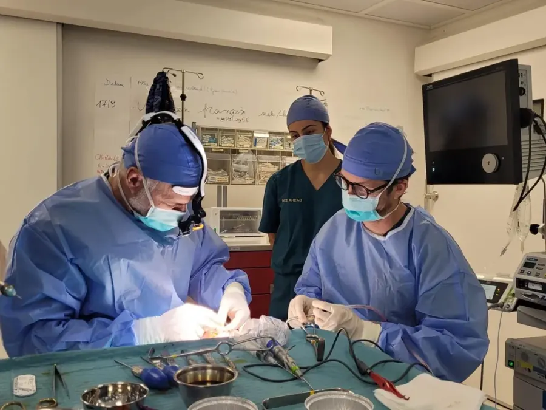
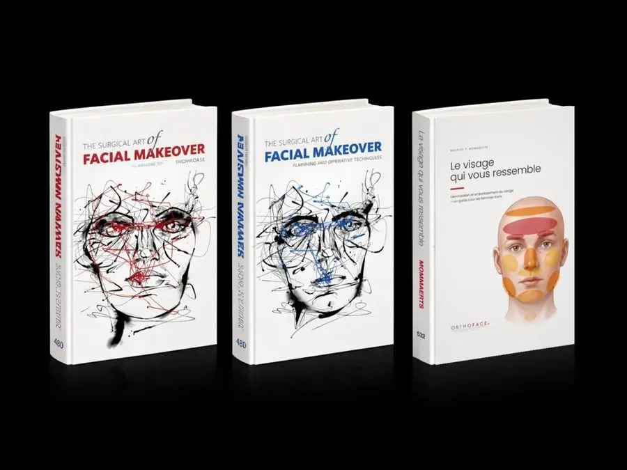

Transformation faciale
Chirurgie esthétique du visage, avec un intérêt particulier pour le lifting, la chirurgie des paupières et la rhinoplastie secondaire ou de révision.
Accueil / Le chirurgien
MD, DMD, PhD
Une autorité internationale de premier plan en chirurgie orthognathique, orthofaciale et maxillofaciale esthétique, forte de plus de trois décennies d'expérience chirurgicale et académique.

Chirurgie esthétique du visage, avec un intérêt particulier pour le lifting, la chirurgie des paupières et la rhinoplastie secondaire ou de révision.
Correction de la position des mâchoires et de l'asymétrie faciale.
Auteur du guide pour patientes « Le visage qui vous ressemble ».
Des résultats naturels qui allient fonction et esthétique.
Implants de remodelage facial, prothèse de l'ATM, AMSJI.
La consultation sert à construire un plan sur mesure.
Prendre rendez-vous
À la Face Ahead Clinic d'Anvers, le Pr Mommaerts allie l'excellence chirurgicale à une approche artistique, pour des résultats qui équilibrent fonction et esthétique. Il intervient également en tant que consultant pour les hôpitaux GZA (ZAS) à Anvers.

Le Pr Mommaerts a joué un rôle pivot dans la formation et l'avancement de la chirurgie cranio-maxillo-faciale à travers le monde.
Reportage : Z-Nieuws, présenté par Ilse De Winne, sur l'acquisition de la société belge CADskills par l'entreprise suisse de technologie médicale Medartis.
À la clinique d'Anvers ou en vidéo, sur rendez-vous.